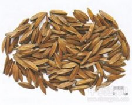

喜树果

拼音
Xǐ Shù Guǒ
别名
千丈树、水栗子、天梓树
来源
为珙桐科植物喜树Camptotheca acuminata Decne.的果实。秋季果实成熟尚未脱落时采收，晒干。
生境分布
生于海拔1000m以下较潮湿处；有种植。主产浙江、江苏、江西、湖北、湖南。
药材特点
落叶大乔木。叶互生，卵状长方形或卵状椭圆形，长7～18cm，宽5～10cm，先端渐尖，基部圆或广楔形，全缘，边缘有纤毛，羽脉10～11对；叶柄红色，有疏毛。花单性同株，成球形头状花序；花萼5齿裂；花瓣5，绿色；雄花雄蕊10；雌花子房下位，1室，柱头3裂，花盘明显。果序球状。花期8月，果期10～11月。
性状
果实披针形，长2～2.5cm，宽5～7mm，先端尖，有柱头残基；基部变狭，可见着生在花盘上的椭圆形凹点痕，两边有翅。表面棕色至棕黑色，微有光泽，有纵绉纹，有时可见数条角棱和黑色斑点。质韧，不易折断，断面纤维性，内有种子1粒，干缩成细条状。味苦。
性味
性寒，味苦、涩；有毒。
功能主治
抗癌，散结，破血化瘀用于多种肿瘤，如胃癌、肠癌、绒毛膜上皮癌、淋巴肉瘤等。
用法用量
无用法用量数据
化学成分
含喜树碱（camptothecine）、喜树次碱（venoterpine）、10-羟基喜树碱（10-hydroxycamptothecine）、10-甲氧基喜树碱（10-methoxycamptothecine）、白桦脂酸（betulic acid）、长春甙内酰胺（vincoside-lactam）等。
药理作用
1：无药理作用数据
摘录
《中药大辞典》